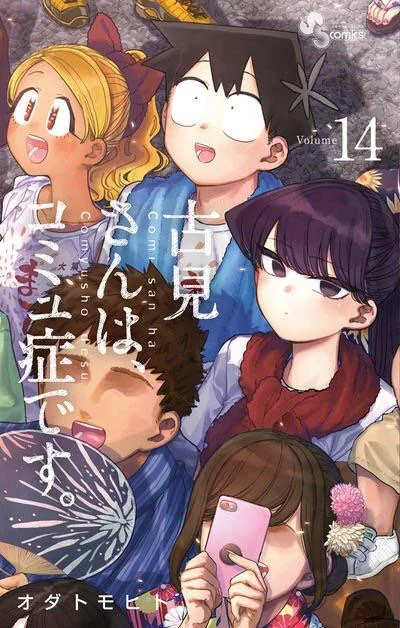

Classroom of The Elites
The Japanese government has established the Tokyo Metropolitan Advanced Nurturing School, dedicated to instruct and foster the generation of people that will support the country in the future. The students are given a high degree of freedom in order to closely mimic real life. Play Music
Komi Can't Communicate
Komi, a high school Madonna, appears to be cold and above her classmates. However, in reality, her disposition is due to being unable to communicate with others. Tadano, Komi's classmate, is good at reading situations and quickly comes to realize that Komi has a communication disorder. Play Music

One Piece
Luffy is a young adventurer who has longed for a life of freedom ever since he can remember. He sets off from his small village on a perilous journey to find the legendary fabled treasure, ONE PIECE, to become King of the Pirates! Play Music
Ms. Kobayashi Dragon Maid
She is a 25-year-old normal programmer and office worker who suddenly finds herself living with a dragon named Tohru after removing a divine sword from it on a drunken night. While typically stoic and kind-hearted, she can get wild when drunk. Play Music
Disastrous Life of Saiki K
A high school student with powerful psychic abilities tries to live an ordinary life by keeping his true nature a secret from his many quirky classmates and anyone else he comes across. Play Music
Erased
Erased follows the Story of Satoru Fujinuma who is a 29 year old aspiring manga artist with the ability to travel backwards in time to prevent terrible things from happening. After the murder of a loved on he is launched back further in time than he has ever gone to prevent the tragedy from taking place. Play Music